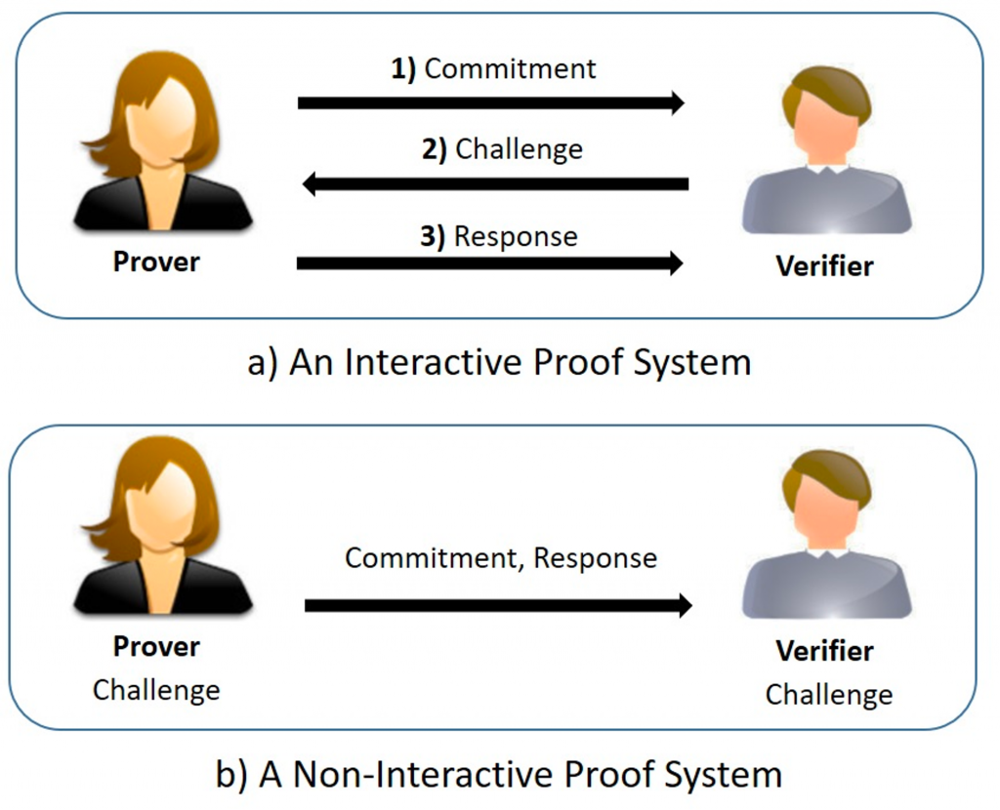
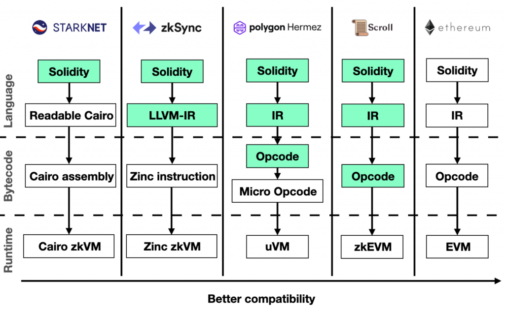
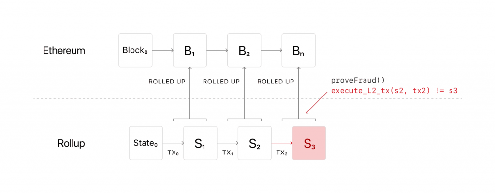
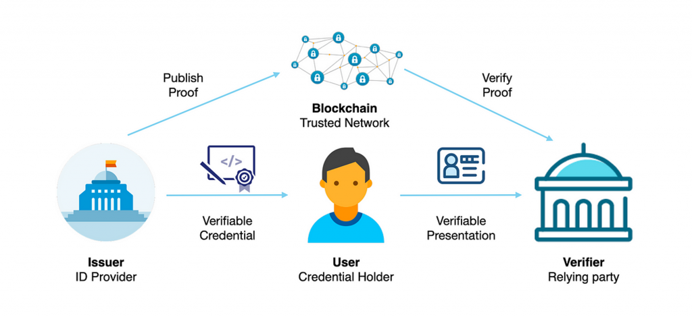
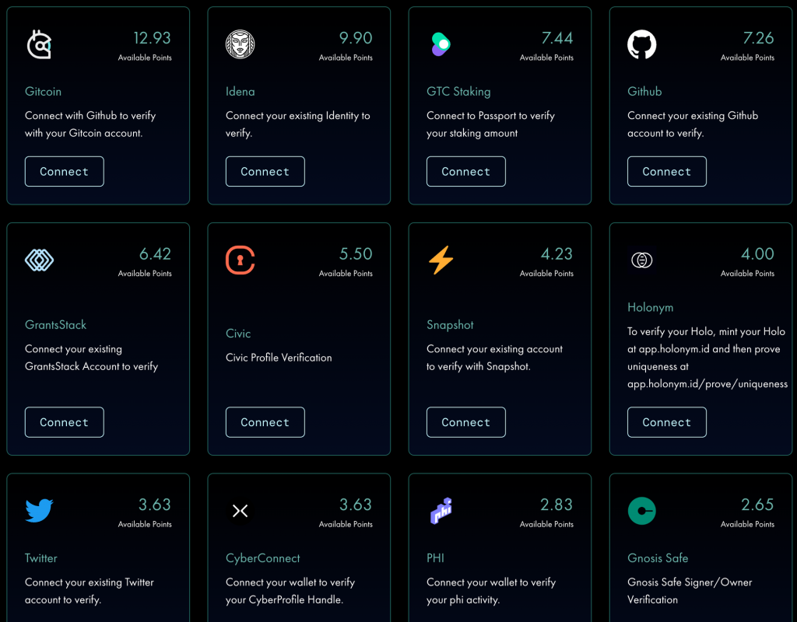

今天會介紹一些較底層的密碼學技術以及相關應用，包含 ZKP, MPC, Layer 2, DID 等等，帶讀者了解許多區塊鏈技術的基石，作為本系列文章的結尾。
當我們提及 Web3 中的先進密碼學技術時，「零知識證明」（Zero-knowledge Proof，簡稱 ZKP）絕對是不可忽略的一環。它是許多區塊鏈應用的核心，因為只有採用 ZKP，某些區塊鏈應用才能在確保隱私的同時，實現高效的計算和驗證。
ZKP 的核心思想是：證明者可以不揭露任何具體資訊，但仍能向驗證者「證明」某個事實是真的。舉一個生活中的例子：如果 Alice 想要向一位色盲者 Bob 證明紅色和藍色是兩種不同的顏色，但又不透露具體的顏色資訊給 Bob。這時 Alice 可以將一個紅色物品和一個藍色物品放在他的面前，讓 Bob 隨機選擇一個並隱藏起來，然後問 Alice 所選的是什麼顏色。這樣來回進行多次後如果每次 Alice 都能正確地回答，考慮到如果是亂猜的話每次猜對的機率只有 1/2，Bob 基於機率的計算就會相信紅色和藍色確實是不同的。
再來看一個比較數學的例子：對於一個 n 次方的多項式，當 n 很大時要找出該多項式的解會很難（也就是帶進去會讓結果等於 0 的值），但若證明者已經知道該多項式的一個解，就可以在不透露具體數值的情況下向驗證者證明他的確是知道的，過程中也會像上述流程那樣通過一系列的問答挑戰，使驗證者相信他確實知道這個解。更有趣的是，這個證明過程其實可以不需要任何交互，證明者只需提供一個數學上的證明就足夠了。這個概念也被稱為 Non-interactive Zero-knowledge Proof。

(圖片來源)
這樣的技術在實際應用中有何用途呢？例如在金融交易中，交易雙方可能需要確認對方有足夠的資金，但又不希望揭露自己的資金總額。在這種情況下就可以透過 ZKP 來達成此目的以保護隱私。因此可以看到 ZK 是個非常抽象的數學基礎，可以應用在許多場景。
至於 ZKP 的演算法，最廣為人知的有 zk-SNARK (Succinct Non-Interactive Argument of Knowledge) 和 zk-STARK (Scalable Transparent Argument of Knowledge)。雖然今天我們不會深入其算法細節，但值得一提的是，他們在效率、可信賴設置和抗量子計算的能力上有所不同。可信賴設置（Trusted Setup）指的是在證明開始前需要的「一次性的」Secret 設定過程，如果這些 Secret 沒有被銷毀而被洩漏，可能被用於製造偽造的證明。所以這個設定過程需要極大的信任。
| 可信任設置 | 大小與速度 | 抗量子能力 | |
|---|---|---|---|
| zk-SNARK | 需要 | 產生的證明非常小，且生成速度快 | 使用的某些技術可能會在未來受到量子計算的威脅 |
| zk-STARK | 不需要 | 產生的證明比 zk-SNARK 大，而且生成可能比較慢。但它在驗證時仍然非常快。 | 被設計為對抗量子計算的攻擊，對於擔心量子技術的人來說可能是更好的選擇 |
對於 ZKP 的發展方向，學界和業界都在積極研究其優化方式，包含算法和電路的改進、效能優化、專用硬體的開發等，以期能解決當前算法的效率和規模問題，並推動更多實際應用的出現。
至於 ZK 的詳細算法與底層數學概念，有興趣的讀者可以參考 Vitalik 的文章：An approximate introduction to how zk-SNARKs are possible。另外若想對 ZK 有更全面的了解，也非常推薦最近 RareSkills 出品的 ZK Book，從基礎理論到程式碼實作都有詳細解說，宣稱是最適合開發者的 ZK 教學材料。
昨天提到的 ZK Rollup 就是基於 ZKP 的 Rollup 可擴展性解決方案，能夠把多筆交易集結成單一的大型交易，並記錄到區塊鏈中。其中 ZKP 的應用在於驗證這批次的交易是有效的（例如只有 1 ETH 的地址無法轉出 2 ETH），但不揭露交易的具體細節，從而確保交易的完整性與隱私性。因此背後使用的 ZKP 算法非常重要，因為它必須確保數據夠小並且可以讓驗證者快速驗證 Layer 2 上的資料正確性。
在實現 ZK Rollup Layer 2 解決方案的過程中，由於需要滿足所有操作都是可以經過 ZKP 機制驗證的，會導致更難在這樣的鏈上做到 EVM 相容，也就代表開發者無法很輕鬆的把原有在以太坊上開發好的智能合約搬到採用 ZK Rollup 的鏈上執行。
因此 zk-EVM 就被提出來作為一個解決方案，它的核心思想是想辦法設計跟 EVM 盡量相容的機制，同時又確保所有操作與狀態轉移的方式都能被 ZKP 算法驗證。通常跟 EVM 越相容的解決方案在 ZKP 證明的生成上就會花費更大成本。更多關於 zk-EVM 的資訊可以在 Vitalik 的文章 The different types of ZK-EVMs 中找到。

（圖片來源）
Tornado Cash 也是一個使用 ZKP 技術的知名應用。它提供的是隱私轉帳的功能，也就是當 Alice 想轉移 1 ETH 給 Bob 時，可能不希望這筆轉帳直接出現在鏈上，這樣大家就知道 Alice 跟 Bob 之間有某些交易關係。
因此 Tornado Cash 的作法是它分成了 0.1 ETH, 1 ETH, 10 ETH 跟 100 ETH 的池子，用戶可以選擇一個池子存入對應數量的 ETH 進智能合約，這時 Tornado Cash 會生成一個憑證給用戶，經過一段時間後用戶可以基於該憑證產生一個 ZK Proof 並跟智能合約互動，來證明自己確實擁有這個池子中的一份資產。因此 Alice 可以將此 ZK Proof 提供給 Bob 讓他發送包含該證明的交易，經過智能合約驗證通過後就可以從池子中取回特定數量的 ETH。
只要存入跟取出之間的時間間隔夠長，過程就是無法被追蹤的，因為其他人無從得知每一筆取出交易對應到哪一筆存入交易，達到隱私交易的目的。不過這樣的隱私保護功能也常被用於洗錢以隱匿金流，因此 Tornado Cash 曾遭到美國的制裁。
還有一個有趣的 ZKP 應用是 World Coin，他們採用虹膜掃描技術，為每個人類建立唯一的身份標示。主要可以應用在任何「希望每個人只能領取一次」的場景上，像是全民基本收入（Universal Basic Income, UBI）這種公共福利項目，或是在一些去中心化應用中會希望他們的代幣空投都是發送給真實的人類而非機器人（也就是避免女巫攻擊）。只要確保每個領取福利的人都是真實存在且唯一的，就不會有重複或虛假身份的問題。
這背後使用到 ZKP 技術的點在於，使用者必須生成一個「我還沒領過該項目」的證明，同時又不暴露自己的身份或虹膜資料，並交由智能合約驗證，這樣就能解決重複領取的問題同時兼顧隱私。當然也有人對於要被掃描虹膜本身就有很大的隱私顧慮，因此是否應該參與仍是見仁見智。
（圖片來源）
ZKP 的應用場景非常廣泛，除了上述例子外，它還可以應用於隱私交易、數位身份認證、跨鏈協議等多個領域。有興趣深入了解的讀者，可以參考 Vitalik 的 Some ways to use ZK-SNARKs for privacy 文章。
在 Day 28，我們已經簡單介紹了 Multi Party Computation (MPC, 多方運算) 的概念。回顧一下，MPC 主要目的是讓多個參與者共同參與某個函數的計算，但卻不揭露自己的私有資訊給其他人。
除了經常被提及的 Threshold Signature Scheme (TSS) 演算法可以用來實作 MPC 錢包簽章，MPC 還有許多其他算法來允許多方共同計算不同函數的結果。例如 Garbled Circuit 是一種用於 2 Party 安全計算一個二進制函數的方法，以及 Private Set Intersection 相關的演算法可以在不透露兩個集合完整資訊的前提下計算交集，可被應用在 Password Monitoring 來安全地識別使用者的密碼是否已被洩漏到公開資料中。
為了實現 MPC，背後的一個關鍵技術是 Fully Homomorphic Encryption (FHE, 全同態加密)。FHE 的魅力在於它可以在資料仍然保持加密的情況下，進行複雜的數學運算，例如加法或乘法，且運算結果也是加密的。只要對最終結果進行解密，就可以在不洩漏其他輸入資訊的前提下得到函數的計算結果，因此這類的演算法通常會是 MPC 演算法的基礎。
許多人常常將 ZK, MPC 和 FHE 這些術語混用。為了更好地區分它們，以下總結他們的主要差異：
若讀者想深入瞭解 Multi Party Computation 及其背後的數學，推薦 DApp Learning 的頻道和其教材，其中包含了許多深入且詳細的內容。
在 Layer 2 較前沿的發展也使用到許多密碼學技術，例如昨天提到的 EIP-4844 中增加了一種名為 blob 的資料類型，能夠讓一些 Rollup 解決方案在裡面用較低的成本存放交易資料。對 Optimistic Rollup 來說，由於他設計的在 Layer 1 上進行「挑戰」的機制，也就是當任何人發現 Layer 2 中儲存的狀態跟 Layer 1 上存的狀態不一致時，可以在 Layer 1 上發起挑戰來使不合法的交易無效化。

（圖片來源）
但為了節省成本，blob 的內容是無法被智能合約存取的，不過至少 Layer 1 上會儲存 blob 的一個 Commitment，基本上就是把所有 blob 裡的資料做一個 hash 成為一個 root，並且證明方可以提出某個 blob 資料屬於這個 root 的證明（類似 Merkle Tree 的機制）。
這裡用到的 Commitment 叫做 KZG Polynomial Commitment，主要會透過多項式的方式來編碼一組資料，例如當我想編碼 [x, y, z] 這個資料時等價於紀錄一個多項式 f 使得 f(1) = x, f(2) = y, f(3) = z。有了這個多項式之後就能透過有效率的方式對他進行 hash。相對於 Merkle Tree 的好處是他的 Proof Size 較小且驗證的步驟較少，可以在鏈上進行更有效率、低成本的驗證。
值得一提的是 KZG Commitment 也是一些 ZKP 算法的基礎，可以看到許多基礎密碼學概念都是共通的。
昨天的內容也有提到 Decentralized ID (DID, 去中心化身份)，它是一種讓用戶可以在互聯網上自主識別和管理自己身份的系統。會出現的背景是因為現有 Web2 中人們的身份已經被各種中心化的大型公司和政府掌握，例如當 Facebook, Twitter 等社群平台決定將某個用戶的帳號停權時，他們的網路足跡就會直接被消失。因此 DID 主要目的是希望將個人資料與身份的控制權交還給用戶本人，這樣每個人的身份就不再依賴於傳統的中心化身份提供者。
Web 3.0, a decentralized and fair internet where users control their own data, identity and destiny.
在 DID 的架構中，通常有三個主要的角色：用戶 (Subject)、發行者 (Issuer) 以及驗證者 (Verifier)。用戶是身份的擁有者，發行者負責提供身份證明，而驗證者則確認身份證明的真實性和有效性。因此一個用戶可以搜集來自各式各樣發行者的身分證明，保存在自己身上，並在必要時出示對應的證明。例如當我的地址已經做過 KYC，提供我 KYC 服務的人就可以發給我一個憑證，代表我已經做過 KYC 了，這個證明就可以讓一些想要合規的 DApp 來驗證（例如某些 DApp 可能需要驗證使用者不是美國公民）

（圖片來源）
Issuer 為了證明資料的有效性，也會透過把證明發佈到區塊鏈上來幫助 Verifier 進行驗證，因此 DID 的實現方式也會利用到 ZK 的技術。例如當用戶希望在某個場景下證明自己的年齡但不想透露確切的出生日期時，他可以使用 ZK 技術拿著 Issuer 發行的 Verifiable Credential 向 Verifier 證明自己已滿 18 歲，來確保隱私性。
Verifiable Credential 中會紀錄一組該憑證的防篡改的 metadata，包含誰是發行者、發行日期、有效日期、驗證用的公鑰等等，讓 Verifier 可以用密碼學方式驗證發行此憑證的源頭是誰。
DID 的基礎建設發展得十分迅速，包含 W3C（全球資訊網協會）已經為 DID 提供了正式的標準，這些標準詳細描述了如何創建、管理和驗證 DIDs，這可以幫助開發者和服務提供者有一個統一和標準化的參考框架。
另一個值得一提的 DID 應用案例是 Gitcoin Passport，使用者可以用錢包登入 Gitcoin Passport 後連結許多第三方帳號，包含 Github, Twitter, KYC 提供商等等，Gitcoin 會基於每個第三方帳號的「唯一人類」程度給分，例如如果連接的 Github 帳號是一年前創建的或是曾經有非常多 activity，那就會給予更高的分數。基於使用者連接的服務最終會算出一個「Unique Humanity Score」。

這個 Unique Humanity Score 就可以被用來防止女巫攻擊，因為當使用者在 Gitcoin Passport 驗證後可以拿到屬於自己的 DID 身份，他的呈現方式就是一個可以下載下來的 JSON 檔，裡面包含了 Gitcoin 的簽章。而當任何項目方想進行空投時，可以限定只空投給有提交 Gitcoin Passport 且分數在一定門檻以上的使用者（分數越高越難）。這樣就可以確保發放出的獎勵都是給到不同的人，要創進大量的假帳號來刷獎勵就會非常困難。
除了以上主題外，也還有許多非常新的密碼學主題，包含：
這些主題都是出自於 Vitalik 的部落格，裡面有許多技術主題非常值得深入研究。
今天我們介紹了關於 ZK, MPC, Layer 2, DID 等主題的概念與應用場景，以及底層用到的密碼學技術有哪些，來幫助讀者從底層到應用層建立完整的認知模型。至此「Web3 全端工程師的技術養成之路」系列就完結了，感謝大家的追蹤與支持！
區塊鏈的技術非常有趣也在持續快速發展，行業中許多研究者與企業都致力於降低使用者門檻、提供更好的用戶體驗、降低交易成本、增加交易速度、保護隱私等等，對於技術的狂熱者來說永遠不會覺得無聊。最近 A16Z 才剛發佈了「Nakamoto Challenges」懸賞能解決七個區塊鏈難題的人，並提供優先進入他們加速器的計畫，從中就可以看出區塊鏈還有許多重要問題尚未被解決，還有很多發展的空間。
最後，如果你也想和我們一起走在 Web3 技術的前沿、與強者同事切磋交流，打造一個安全且開放的數位資產世界，那麼歡迎加入 KryptoGO！